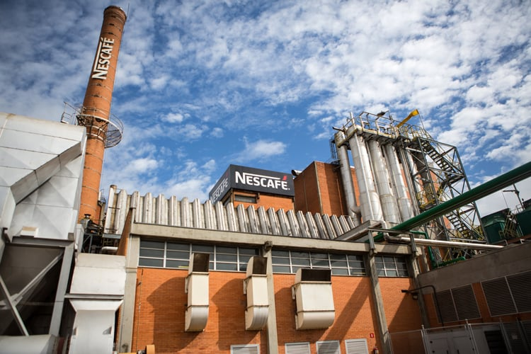

A Nestlé foi fundada em 1905 pelo farmacêutico Henri Nestlé, que juntamente com a empresa de leite
condensado Anglo-Swiss Condensed Milk Company uma
empresa da Europa, Suíça. Pois no ano anterior 1904 a Nestlé tinha
dado uns dos seus passos mais importantes, começaram a vender chocolate.
Ela assumiu os negócios de exportações da Peter & Kohler. O próprio Henri teve uma participação importante na criação do chocolate ao leite, fornecendo leite condensado para seu vizinho Daniel Peter, que o utilizou em seu primeiro produto na década de 1880.
A partir desses momentos pioneiros, a Nestlé continuou crescendo e se inovando cada vez mais principalmente no quesito da sustentabilidade ambiental e digital com uso de diversas tecnologias e diversas táticas e normas.
Sustentabilidade na Nestlé
A Nestlé acredita que o bom alimento tem um poder transformador. Essa crença
impulsiona seu compromisso de usar sua estrutura global e experiência (com mais de 100
anos de atuação em 190 países) para construir um futuro mais saudável para todos.
Para isso a Nestlé tem estabelecido algumas metas e ações para ajudar um futuro mais sustentável, em 2020 a Nestlé S.A apontou uma série de ganhos ambientais alcançadas no nível global, esses ganhos abrangem desde o uso de materiais e a geração de resíduos e emissões até mesmo consumo de energia.
Para isso a Nestlé tem estabelecido algumas metas e ações para ajudar um futuro mais sustentável, em 2020 a Nestlé S.A apontou uma série de ganhos ambientais alcançadas no nível global, esses ganhos abrangem desde o uso de materiais e a geração de resíduos e emissões até mesmo consumo de energia.

Para monitorar os resultados em diferentes partes do mundo, a Nestlé conta com o
Sistema de Gerenciamento do Meio Ambiente. No Brasil foram criados um mapa de
projeção com mais de 200 mil projetos para aumentar a eficiência das realizações
desses projetos e promover a sustentabilidade.
A Nestlé foca na certificação de escritórios e plantas em normas com ISO 14001 que é uma norma das gestões ambientais, a ISO 18001 que é uma norma de segurança e saúde e a ISO 22000 que é uma norma da segurança dos alimentos. Essas normas demonstram o foco da Nestlé na luta pela sustentabilidade.
A Nestlé não busca apenas reduzir o impacto negativo da produção de alimentos, ela também busca uma melhora no ambiente seja com seus alimentos ou seja com as próprias embalagens e até mesmo suas fabricas. A regeneração é um princípio fundamental que guia suas ações.
Transformação Digital na Nestlé
A Nestlé também está investindo na transformação digital para otimizar seus processos e
promover a sustentabilidade. Recentemente, ela firmou parceria com a Claro,Embratel e Ericsson para um programa piloto
conectado com 5G SA experimental. Essa iniciativa visa melhorar a eficiência e a inovação em suas operações.
A implementação do 5G SA (5G autônomo) em sua fábrica em Caçapava, São Paulo. Essa foi a primeira implementação dessa rede privativa 5G com 100% on premisses implementada para a indústria 4.0 na América Latina.
Esse sistema ocorreu graças à parceria com a Embratel, que ativou o 5G da Clara, e a tecnologia privativas 5G da Ericsson. Essa rede proporciona uma conexão segura de 4G E 5G com alta velocidade, acelerando a transformação digital principalmente nas indústrias.
Para evitar problemas de segurança para as infraestruturas 5G, todos os componentes sejam antenas ou os servidores ficam nas instalações da própria Nestlé, e as arquiteturas da rede se exige distancias curtas é o mais adequado para aplicativos críticos que exigem mais gasto e respostas em milissegundos.
A transformação digital não se limita às vendas, mas é implementada todo um planejamento na produção, desde o chão de fábrica até mesmo ao pós-consumo, a Nestlé busca a perfeição e a inovação em todas as etapas do processo.
As embalagens da Nestlé.
Um desses processos para ajudar na sustentabilidade é a produção e criação de embalagens 100% reutilizável envolvendo um ciclo de vida para elas, desde a produção até o descarte dela. A empresa estimula o descarte correto e apoia ativamente a cadeia de reciclagem, garantido que as embalagens sejam reutilizadas da maneira mais sustentável.
A Nestlé é uma das empresas mais empenhada em reduzir os impactos negativos no meio ambiente de suas embalagens. Ela busca várias formas de fazer as escolhas mais sustentáveis para o mundo.